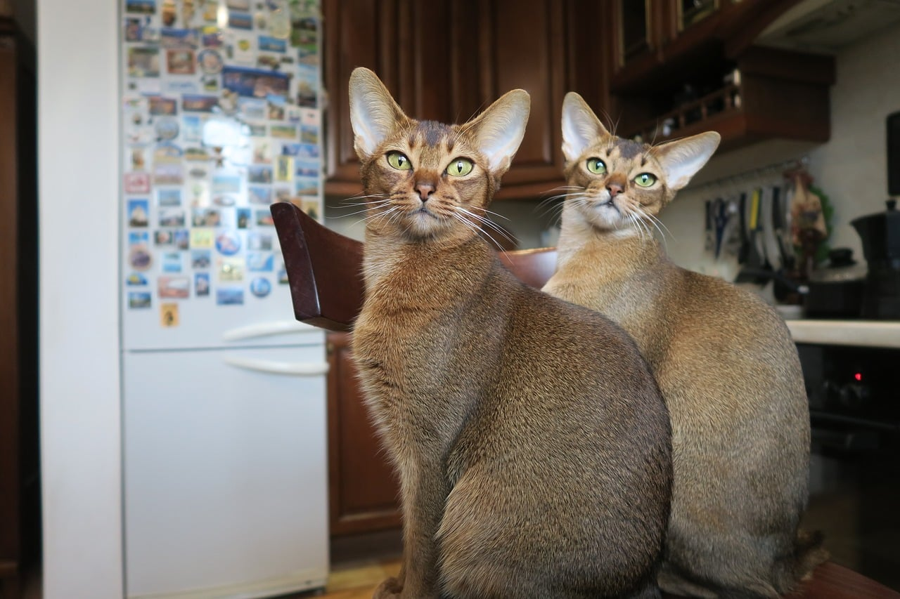
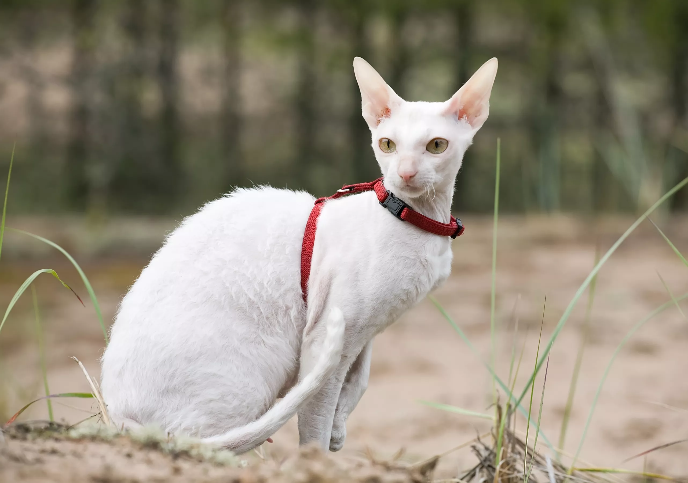

3 Most Intelligent Cats To Adopt If You Want A Clever Companion
By: Mo Rashad
01 Abyssinian
This sleek-looking cat is athletic, agile, and affectionate toward humans. Abyssinians are very intelligent and highly in tune with the activities of their families. They're generally not lap cats, but they thrive on human attention, especially in the form of petting or grooming. They also tend to enjoy the company of other animals.
Breed Overveiw
Height: 8 to 10 inches
Weight: 8 to 12 pounds
Physical Characteristics: Tall, pointy ears; wedge-shaped head; slender
02 Bengal

The Bengal is perhaps best known for its exotic coat that resembles a jaguar or leopard. This breed originated from crossing a domestic cat with an Asian leopard cat. Bengals are highly intelligent, athletic, and still a bit wild. They love to run, jump, climb, and play. They require ample space for exercise (especially vertical space), as well as mental challenges, such as puzzle games.
Breed Overveiw
Height: 8 to 10 inches
Weight: 15 pounds
Physical Characteristics: Sleek, muscular body; striped and spotted coat
03 Cornish Rex
The most unique feature of the Cornish Rex is its wavy coat. These cats are active and friendly, and some say they're rather dog-like in their play, even into their senior years. Many even enjoy games of fetch. If you're looking for a highly interactive cat, a Cornish Rex could be a good choice.
Breed Overveiw
Height: 12 to 14 inches
Weight: 6 to 10 pounds
Physical Characteristics: Curved body; high cheekbones; large ears
Breeds to avoid
Certain cat breeds can make great pets, but they aren’t necessarily known for their smarts. Birmans, Persians, Himalayans, exotic shorthairs, and ragdolls aren’t typically highly intelligent cats. Still, many of these felines are affectionate, playful, and easygoing companions.